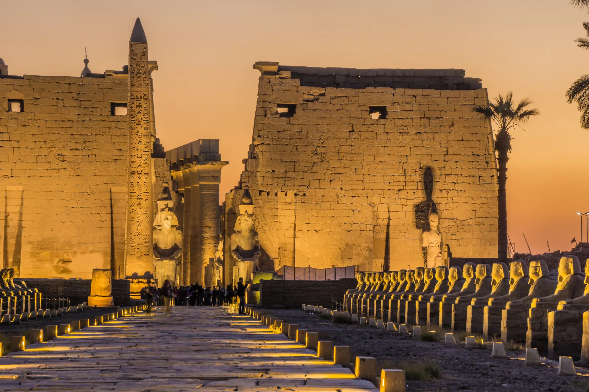

WHERE THE STORY BEGINSDAY ONE · LUXOR
Meet the
ancient world.
Walk between towering columns, trace the stories in the stone, and let the city’s golden light welcome you aboard.
Day one itinerary
09:00 / MORNING
Arrive in Luxor and explore the monumental halls of Karnak with your guide.
14:00 / AFTERNOON
Settle into your Nile cabin. Lunch on board, followed by a little time to unwind.
18:00 / EVENING
Discover Luxor Temple in the softer evening light, then return for dinner.